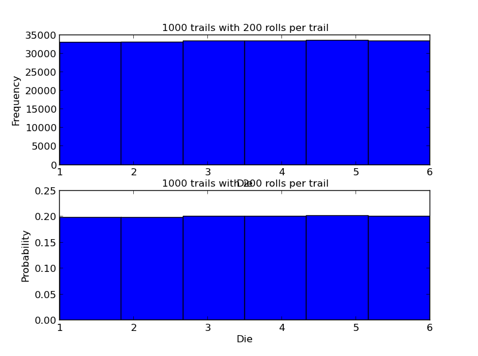
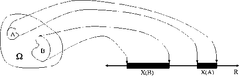
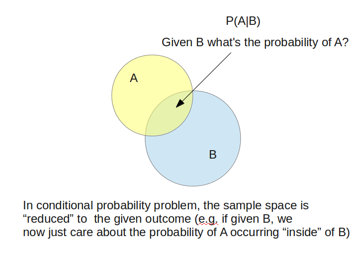
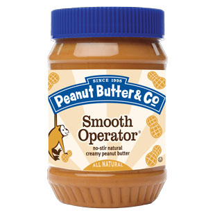
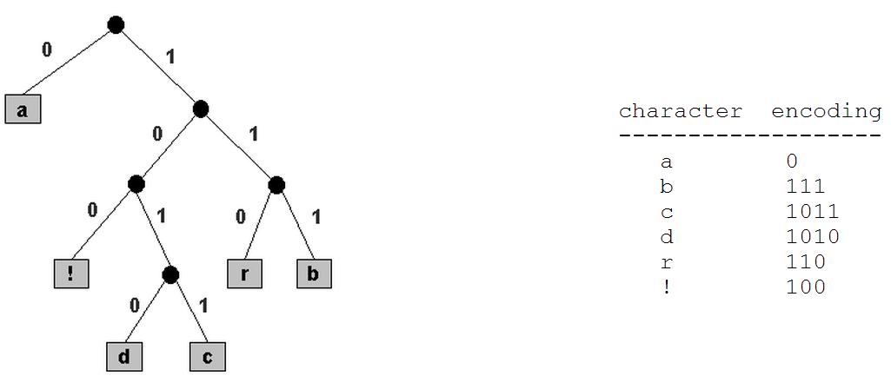
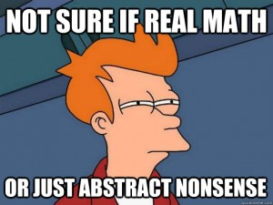
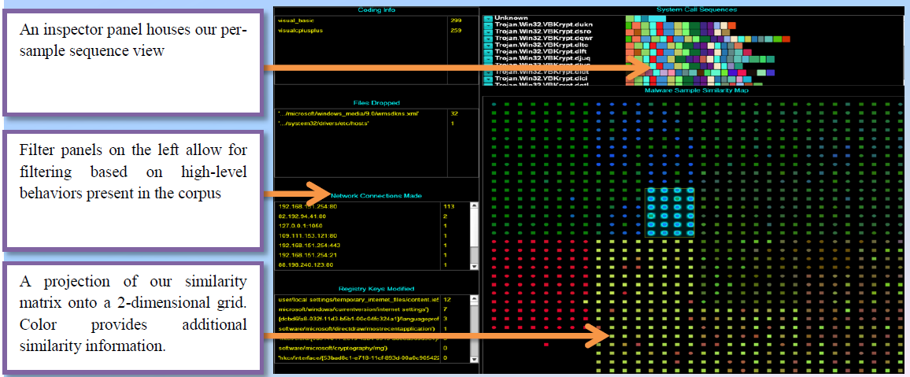

Quantitative Methods For Binary Data
A Honey Badger's Journey
Created by Rafael Turner / Invincea Labs
Slide Navigation
- Page Up
- Page Down
Overview (Hit Escape)
"Over the past 2.5 years Endgame received 20M samples of malware equating to roughly 9.5 TB of binary data. In this, we’re not alone. McAfee reports that it currently receives roughly 100,000 malware samples per day and received roughly 10M samples in the last quarter of 2012. Its total corpus is estimated to be about 100M samples. VirusTotal receives between 300k and 600k unique files per day, and of those roughly one-third to half are positively identified as malware."
- Zachary Hanif, Telvis Calhoun, Jason Trost

Stuxnet variants were kicking it back in DBs in 2005.
Hits the community in 2010.
About a five year lag?

Review Of Probability
Very short review in order to get everyone on the same page with definitions and intuition before we start looking code.
Some Review
Six Outcomes

Discrete Probability Distribution
Uniform Multinomial Distribution Over Six Outcomes
Demo
import numpy as np
import matplotlib.pyplot as plt
def roll_dice(trails=10, die_throws=100, p_vector=[1/6.]*6):
my_result = np.random.multinomial(die_throws, p_vector, trails)
final_counts = map(sum,my_result.transpose())
return final_counts
d1 = float(1)/6
d2 = float(1)/6
d3 = float(1)/6
d4 = float(1)/6
d5 = float(1)/6
d6 = float(1)/6
p_vector = [d1, d2, d3, d4, d5, d6]
x = roll_dice(1000, 200, p_vector)
$\Omega = \{``d_{1}", ``d_{2}",``d_{3}",``d_{4}",``d_{5}",``d_{6}"\}$
$X$(samplespace) = {1,2,3,4,5,6}
$P(X=x)$ = $\{\frac{1}{6},\frac{1}{6},\frac{1}{6},\frac{1}{6},\frac{1}{6},\frac{1}{6}\}$
Random Variables
In the last slide $X(\Omega)$ looked like $$ X(x) = \left\{ \begin{array}{lr} 1 & : x = ``d_{1}"\\ 2 & : x = ``d_{2}"\\ 3 & : x = ``d_{3}"\\ 4 & : x = ``d_{4}"\\ 5 & : x = ``d_{5}"\\ 6 & : x = ``d_{6}" \end{array} \right. $$
Random Variables
If we were interested in the probability of evens and odds, then $X(\Omega)$ looks like $$ X(x) = \left\{ \begin{array}{lr} 0 & : x \in \{``d_{1}", ``d_{3}", ``d_{5}"\}\\ 1 & : x \in \{``d_{2}", ``d_{4}", ``d_{6}"\} \end{array} \right. $$
Assuming a fair die, $P(X=x)$ = $\{\frac{1}{2},\frac{1}{2}\}$
Random Varibles in Pictures
Discrete Probability Distribution
Any function, $f(x)$, can serve as the probability distribution for a discrete random variable $$X$$ if and only if its values
\begin{aligned} \\ f(x) \geq 0 \\ \end{aligned} \begin{aligned} \\ \sum_{x} f(x) = p_{1} + p_{2} + ... + p_{k} = 1 \\ \end{aligned}In the literature $f(x)$ is written $P(X=x)$
Code
That's it for review let's look at some computer languages
Probabilities
How do we assign the correct probabilities to events? But wait?! What is probability anyway?
Some Perspectives
"Frequentist methods assume that probability is the long-run frequency of events (hence the bestowed title)."
"Bayesians interpret a probability as measure of belief, or confidence, of an event occurring. "
Probabilities are elements of a probability distribution.
Probabilistic Programming and Bayesian Methods for HackersAutomatic Discovery of Instruction set Categories
Can a computer discover semantic categories of assembly instructions?
This tool helps reverse engineer unknown instruction sets.
Ngram Models
n-grams capture a degree of the global properties while being tractable and concise because they represent an (n-1)th-order Markov language model.
Language Models
A language model consists of a finite set of vocabulary $V = \{ and, push, xor, \dots \}$, and a function $p(x_{1}, x_{2} \dots, x_{n})$ such that:
- For any $(x_{1}, \dots, x_{n}) \in V^*, p(x_{1}, x_{2} \dots, x_{n}) \ge 0$
- And $\displaystyle\sum_{(x_{1}, \dots x_{n}) \in V^*} p(x_{1}, x_{2} \dots, x_{n})$ = 1
$p(x_{1}, x_{2}, \dots x_{n})$ is just probability distribution over all possible instruction mnemonic sequences given the vocabulary.
Course Notes for COMS w4705: Language Modeling by Michael CollinsLearning a language model from data
Let $c(x_{1}, \dots , x_{n})$ be the number of times that the instruction sequence $x_{1}, \dots x_{n}$ occures, and N be the total number of sequences in the training data.
$p(x_{1}, x_{2}, \dots x_{n}) = \frac{c(x_{1}, \dots x_{n})}{N}$
Terrible idea
This model will assign a ton of zeros!!
Given a training data, how do we learn the function p?
The Question
Example: bigram model
jmp xorl popl movl andl pushl pushl pushl pushl pushl pushl pushl pushl
call hlt pushl movl subl movl movl movl movzbl
movsbl cmpl je cmpl jg
$ p(m_{i} | m_{i-1}) = \frac{c(m_{i-1}m_{i})}{\sum_{m_i} c(m_{i-1}m_{i})} $
$ p(s) = \prod_{i=1}^{l+1}p(m_{i}|m_{i-1}) $
Example: Trigram estimation
As an example, our estimate for p(subl | movl,movl) would be
$\frac{c(movl,movl, subl)}{c(movl,movl)}$
jmp xorl popl movl andl pushl pushl pushl pushl pushl pushl pushl
call hlt pushl movl subl movl movl movl movzbl
movsbl cmpl je cmpl jg
p(jmp cmpl pushl) = $ p(jmp | \bullet) p(cmpl | jmp) p(pushl | cmpl) p(\bullet | pushl) $
$ p(s) = \prod_{i=1}^{4}p(m_{i}|m_{i-1}) $
jmp xorl popl movl andl pushl pushl pushl pushl pushl pushl pushl
call hlt pushl movl subl movl movl movl movzbl
movsbl cmpl je cmpl jg
p(jmp cmpl pushl)$ p(jmp | \bullet) p(cmpl | jmp) p(pushl | cmpl) p(\bullet | pushl) $
$ \frac{c(\bullet,jmp)}{\sum_{m} c(\bullet,m)} \frac{c(jmp,cmpl)}{\sum_{m} c(jmp,w)} \frac{c(cmpl,push1)}{\sum_{w} c(cmpl,w)} \frac{c(push1,\bullet)}{\sum_{w} c(pushl,w)}$
$ \frac{1}{3} \frac{0}{1} \frac{0}{1} \frac{1}{5} = 0$
Smooooooothing
$ p(m_{i} | m_{i-1}) = \frac{1 + c(m_{i-1}m_{i})}{\sum_{m_i} 1 + c(m_{i-1}m_{i})} $
$ p(m_{i} | m_{i-1}) = \frac{1 + c(m_{i-1}m_{i})}{|V| + \sum_{m_i} c(m_{i-1}m_{i})} $
where $V = \{m : c(m) > 0\} \cup \{UNK\} $
 NLP Lunch Tutorial: Smoothing Bill MacCartneyOther Methods to consider
Additive smoothing
Good-Turing estimate
Jelinek-Mercer smoothing (interpolation)
Katz smoothing
Witten-Bell smoothing
Absolute discounting
Kneser-Ney smoothing
Unsupervised Learning of Instruction Categories
| 000 | call | 2559560 |
| 0010 | lea | 1802186 |
| 00110 | movl | 1836339 |
| 00111 | mov | 10932687 |
| 0100 | je | 1892048 |
| 01010 | jne | 1011392 |
| 0101100 | jg | 61836 |
| 0101101 | jle | 68713 |
| 01011100 | rep | 9697 |
| 0101110100 | cmovns | 1907 |
| 0101110101 | cmovs | 1699 |
| 0101110110 | cmove | 20923 |
| 0101110111 | cmovne | 12415 |
| 010111100 | setne | 12263 |
| 0101111010 | sete | 17697 |
| 010111101100 | setg | 1626 |
| 010111101101 | setle | 504 |
| 0101111011100 | setl | 452 |
| 0101111011101 | setge | 392 |
| 0101111011110 | setbe | 568 |
| 0101111011111 | setae | 277 |
| 01011111000 | cmovbe | 2939 |
| 010111110010 | cmovae | 1278 |
| 010111110011 | cmovb | 932 |
| 01011111010 | cmovg | 2090 |
| 000111110110 | cmovle | 2274 |
| 0001111101110 | cmovge | 1361 |
| 00011111011110 | cmovl | 1021 |
| 1110 | pop | 1663486 |
| 11110 | cmp | 984856 |
| 1111100000 | jp | 34325 |
| 1111100001 | daa | 33944 |
| 1111100010 | ds | 24894 |
| 1111100011 | jno | 136228 |
| 111110011 | jns | 137145 |
| 111110101 | jl | 49303 |
| 111110110 | ja | 190602 |
| 111110111 | jbe | 210968 |
| 1111110 | and | 1357663 |
Constructing Variable-Length Code
Every mnemonic is assigned a bit-string.
If a word's left bits agree with another word's, those words will be in a similar category.

Initial setup: Place each instruction mnemonic in each cluster.
And compute the Average Mutual Information (AMI).
repeat
for each pairs of clusters do
Merge the pair of clusters temporarily
Compute the AMI of the collection
end for
Select a pair of cluster with min decrease in AMI
Compute AMI of the new collection
until reach the predefined number of clusters
repeat
Move each mnemonic to the cluster for which the resulting partition
has the greatest AMI until no more increment to AMI
Set up 1,000 different “instruction categories”, each with one member: the 1,000 most frequent words.
Consider all $\frac{1000*999}{2}$ ways of collapsing these, and pick the one which minimizes the decrease in the mutual information you get when you pass from a system with 1,000 categories to one with 999 categories...
Repeat until you’re done.
Along the way assign each instruction a bit-string based on the clusters it was in and when they were merged.
John Goldsmith
def entropy(counts):
ps = counts/float(sum(counts))
ps = ps[nonzero(ps)]
H = -sum(ps * numpy.log2(ps))
return H
def mutual_information(counts_xy,counts_x,counts_y)
H_xy = entropy(counts_xy)
H_x = entropy(counts_x)
H_y = entropy(counts_y)
return H_x + H_y - H_xy

"When you can measure what you are speaking about, and express it in numbers, you know something about it, when you cannot express it in numbers, your knowledge is of a meager and unsatisfactory kind; it may be the beginning of knowledge, but you have scarcely, in your thoughts advanced to the stage of science." - Lord Kelvin
Often joint optimization of two quality criteria
- Keep Similar object in the same group
- Keep different objects in different groups
- Partitioning of data using k centroids (mean vectors)
- Numerous variants: hard/soft, spectral, k-medoids
- Compact representation of clusters by centroids

Kmeans Example Code
from sklearn.cluster import KMeans
kmeans = KMeans(50, random_state=8)
kmeans_out = kmeans.fit(X)
print k_means.labels_[::10]
Optimization problem underlying k-means clustering
Given your data vectors, $(x_{1}, \dots, x_{n})$ group into k clusters $C = \{C_{1}, \dots, C_{k}\}$ so that the following is minimized $ \underset{C}{\operatorname{argmin}} \sum_{i=1}^k \sum_{x_{j} \in C_{i}} || x_{j} - \mu_{i} ||^2 $ where $ \mu_{i}$ is the mean of points in $C_{i}$.Demo
Try it out!Properties of k-means clustering
- Need to know or guess the number of clusters before hand
- The clusters are convex due to the optmization problem
Malheur
Automatic Analysis of Malware Behavior
Dimensionality Reduction
We start with a similarity matrix and then assign for each item a location in a low-dimensional space.

Your Turn
Future Work
- Program Similarity Using Programming Language Theory
- Better Visualizations
- Statistical Decomplication
Better Semantics
Better Visualizations
References
- BinaryPig - Scalable Malware Analytics in Hadoop
- Probability for Linguists by John Goldsmith
- Course Notes for COMS w4705: Language Modeling by Michael Collins
- Speech and Language Processing by Daniel Jurafsky & James H. Martin.
- NLP Lunch Tutorial: Smoothing Bill MacCartney
- IBM Clustering: after Brown et al by John Goldsmith
- A Word Clustering Approach for Language Model-based Sentence Retrieval in Question Answering Systems by Saeedeh Momtazi and Dietrich Klakow
- Class-Based n-gram Models of Natural Language by Brown, Peter F., Peter V. Desouza, Robert L. Mercer, Vincent J. Della Pietra, and Jenifer C. Lai
- Clustering of Malicious Software
- Scikit-Learn Clustering
- Malheur